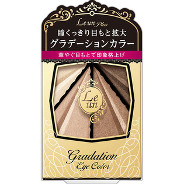

返回列表
产品名称：ルアン プリュス グラデーションアイカラー 01 ゴールドブラウン

伊勢半 ルアン プリュス グラデーションアイカラー 01 ゴールドブラウン ３．４ｇ
メーカー 伊勢半
JANコード 4901433876896
商品の特徴
瞳くっきり目もと拡大
華やぐ目もとで印象格上げ
- 成分・分量
- ＜成分＞
タルク、マイカ、ジフェニルシロキシフェニルトリメチコン、イソノナン酸イソノニル、ダイマージリノール酸ダイマージリノレイル、ワセリン、ステアリン酸亜鉛、カミツレ花／葉エキス、ジメチコン、プロピルパラベン、トリ（カプリル酸／カプリン酸）グリセリル、酸化鉄、合成フルオロフロゴパイト、酸化チタン、（PET／Al／エポキシ樹脂）ラミネート、ホウケイ酸（Ca／Al）、酸化スズ
- 用法及び用量
- ＜使用方法＞
1、上まぶた全体と、下まぶたの目頭から中央に向けて伸ばします。
2、目頭からアイホール全体に広めにぼかします。
3、目のキワからアイホールへぼかすように広げます。
4、上まぶたのキワと、下まぶたの目尻から中央に向かって3分の1にラインを描きます。